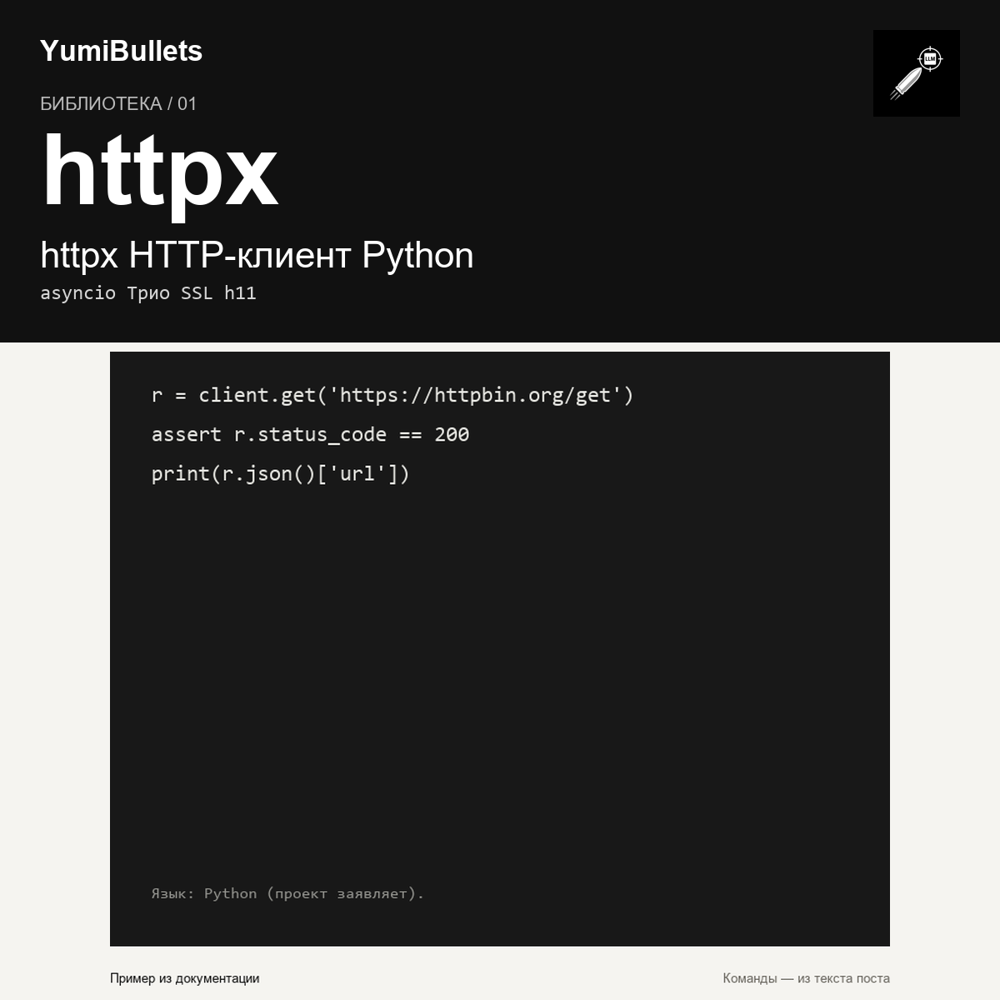

httpx для Python: знакомый requests с asyncio и строгой типизацией
Написали скрипт на requests, а потом понадобился асинхронный клиент — переписывать всё с нуля? httpx берёт знакомый API requests и добавляет async, строгую типизацию и встроенный C